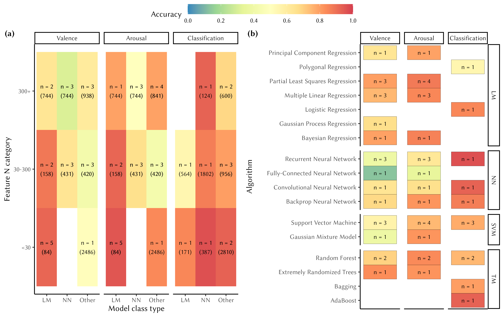

Flowchart of the study inclusions/eliminations.
A Meta-Analysis of Music Emotion Recognition Studies
Abstract
This meta-analysis examines music emotion recognition (MER) models published between 2014 and 2024, focusing on predictions of valence, arousal, and categorical emotions. A total of 553 studies were identified, of which 96 full-text articles were assessed, resulting in a final review of 34 studies. These studies reported 204 models, including 86 for emotion classification and 204 for regression. Using the best-performing model from each study, we found that valence and arousal were predicted with reasonable accuracy (r = 0.67 and r = 0.81, respectively), while classification models achieved an accuracy of 0.87 as measured with Matthews correlation coefficient. Across modelling approaches, linear and tree-based methods generally outperformed neural networks in regression tasks, whereas neural networks and support vector machines (SVMs) showed highest performance in classification tasks. We highlight key recommendations for future MER research, emphasizing the need for greater transparency, feature validation, and standardized reporting to improve comparability across studies.
Keywords
music, emotion, recognition, meta-analysis
Introduction
Emotional engagement is a key reason why people engage with music in their everyday activities, and it is also why music is increasingly being used in various health applications (Agres et al., 2021; Juslin et al., 2022). In recent years, significant advances have been made in music information retrieval (MIR), particularly in music emotion recognition (MER) tasks (Gómez-Cañón et al., 2021; Panda et al., 2023). Music Emotion Recognition (MER) is an interdisciplinary field that combines computer science, psychology, and musicology to identify the emotions conveyed by music. Research in this area involves developing computational models capable of recognizing emotions from musical content. The emotional attributions of music are based on various theoretical frameworks for emotion and require annotated datasets to build and train these models. Improvements to modelling techniques, datasets, and available features have created new opportunities to improve the accuracy and reliability of MER systems developed to predict emotion labels or ratings in music using audio features. Over the past 25 years, these studies have established the types of emotions that listeners perceive and recognize in music. In the last 15 years, research has increasingly focused on tracing these recognized emotions back to specific musical components, such as expressive features (Lindström et al., 2003), structural aspects of music (Anderson & Schutz, 2022; Eerola et al., 2013; Grimaud & Eerola, 2022), acoustic features (Eerola, 2011; Panda et al., 2023, 2013; Saari et al., 2015; Y. H. Yang et al., 2008), or emergent properties revealed through deep learning techniques (Er & Aydilek, 2019; Sarkar et al., 2020).
Despite increased interest in MER studies, there is no consensus on the extent to which emotions can accurately be recognized by computational models. The current literature presents a diverse and mixed picture regarding the success of models in predicting emotions within the affective circumplex – valence and arousal– (Y.-H. Yang & Chen, 2011) and in classifying distinct emotion categories (Fu et al., 2010).
A brief history of MER
Music’s capacity to convey emotions has been widely discussed since the earliest artificial intelligence (AI) applications in the 1950s. Whereas early discourse largely focused on generative composition using computers (Zaripov & Russell, 1969), attention later shifted to creating methods to predict emotion using music’s structural cues. Novel techniques for information retrieval emerged in the 1950s and 1960s (Fairthorne, 1968), inspiring analogous developments for automated music analysis (Kassler, 1966; Mendel, 1969). These developments would set the stage for early work in music emotion recognition (MER). Katayose et al. (1988) conducted the first study of this nature, creating an algorithm that associated emotions with analyzed chords to generate descriptions like “there is [a] hopeful mood on chord[s] 69 to 97.” (Katayose et al., 1988, p. 1087).
Classification and regression approaches
In the early 2000s, several research groups conducted studies using regression (Friberg et al., 2002; Liu et al., 2003) and classification (Feng et al., 2003; Lu et al., 2005; M. I. Mandel et al., 2006) techniques to predict emotion in music audio or MIDI. Citing “MIR researchers’ growing interest in classifying music by moods” (Downie, 2008, p. 1), the Music Information Retrieval EXchange (MIREX) introduced Audio Mood Classification (AMC) to their rotation of tasks in 2007. In the first year, nine systems classified mood labels in a common data set, reaching 52.65% in classification accuracy (SD = 11.19%). These annual events, along with growing interest in the burgeoning field of affective computing (Picard, 1997), would lead to an explosion of interest in MER research.
In the tenth annual AMC task, the highest performing model reached 69.83% accuracy (Park et al., 2017). In parallel, research groups began independently evaluating MER using regression algorithms. The first study to popularize this approach predicted valence (i.e., the negative—positive emotional quality) and arousal (i.e., the calm—exciting quality) in 195 Chinese pop songs (Y. H. Yang et al., 2008) using audio-extracted features represented in 114 dimensions. Applying support vector regression, the study achieved 58.3% accuracy in predicting arousal and 28.1% in predicting valence. This difference in prediction accuracy between dimensions has reappeared in several subsequent studies (e.g., Bai et al., 2016; Coutinho & Dibben, 2013), with some research suggesting this challenge reflects fewer well-established predictors and more individual differences for valence than arousal (Eerola, 2011; Y.-H. Yang et al., 2007).
Across regression and classification paradigms, a wide range of models have been employed, ranging from multiple linear regression (MLR) (Griffiths et al., 2021; Saiz-Clar et al., 2022; Y. H. Yang et al., 2008) to deep neural networks (Hizlisoy et al., 2021; Orjesek et al., 2022). In classification tasks, early studies commonly employed Gaussian mixture models (Liu et al., 2003; Lu et al., 2005) and support vector machines (Lin et al., 2009; M. Mandel & Ellis, 2007; Tzanetakis, 2007), whereas convolutional, recurrent, and fully-connected neural networks are increasingly popular in recent years (Coutinho & Schuller, 2017; Grekow, 2021; Song et al., 2018). In regression tasks, a wide range of algorithms have been tested, including partial least squares (PLS) (Gingras et al., 2014; Wang et al., 2021), support vector machines (SVMs) (Agarwal & Om, 2021; Grekow, 2018; X. Hu & Yang, 2017), random forests (RFs) (Beveridge & Knox, 2018; Xu et al., 2021), and convolutional neural networks (Orjesek et al., 2022).
Dataset size and scope
MER studies apply regression and classification techniques to predict emotion in diverse datasets, using features derived from both music (e.g., audio, MIDI, metadata) and participants (e.g., demographic information, survey responses, physiological signals, etc.). To facilitate model comparison, several databases have been shared publicly, including MediaEval (Soleymani et al., 2013), DEAM (Aljanaki et al., 2017), and AMG1608 (Chen et al., 2015). These datasets predominately use Western pop music, are moderate in size (containing from 744 to 1802 music excerpts) and have been manually annotated by a variable numbers of participants (either by experts, students, or crowdsourced workers). Several publicly available datasets include features analyzed using audio software suites such as OpenSMILE (Eyben et al., 2010) and MIRToolbox (Lartillot & Toiviainen, 2007) – enabling predictions from tens, or even hundreds, of audio features.
An important factor often affecting the size of datasets employed in MER concerns whether they use a predictive or explanatory modelling framework. Large datasets are necessary in predictive studies, where the predominant goal is to generalize predictions across diverse samples, especially for deep learning and complex machine-learning models that require extensive pre-training. Conversely, small, carefully-curated, datasets are useful when attempting to explain how musical factors such as amplitude normalization (Gingras et al., 2014) or different performers’ interpretations (Battcock & Schutz, 2021), affect variance in emotion ratings. In these studies, statistical models serve a different goal. Instead of predicting emotion labels for new music, psychological studies on music emotion test causal theories about the relationship between musical predictors and emotion labels. Whether models serve predictive or explanatory goals is important—affecting both decisions about data curation and modelling, and the models’ resultant predictive and explanatory power (Shmueli, 2010).
In predictive MER tasks, dataset sizes tend to be modest in comparison to other fields, as direct annotation of music examples is resource-intensive. For example, in the visual domain datasets are often significantly larger (e.g., EmoSet with 118,102 images and AffectNet with 450,000, see Jingyuan Yang et al. (2023);Mollahosseini et al. (2017)). Some efforts have been made to scale up MER datasets by inferring emotions from tags (MTG-Jamendo with 18,486 excerpts Bogdanov et al. (2019) and Music4all with 109,269 excerpts Santana et al. (2020)), but these have not found their way into standard emotion prediction or classification tasks yet. However, small datasets can also be useful in predictive contexts when greater control over stimuli or features is necessary. These have been useful in applications testing new feature representations (Saiz-Clar et al., 2022) or identifying relevant features for multi-genre predictions (Griffiths et al., 2021), or as reference standards for comparison with novel feature sets (Chowdhury & Widmer, 2021). Findings from explanatory studies often inform theory-driven applications in predictive tasks, helping improve upon current benchmarks.
The current benchmarks of MER
Predictive accuracy in MER tasks has improved as datasets and models have become more sophisticated; Regression models for arousal/valence have been reported to peak at 58%/28% accuracy in 2008 (Y. H. Yang et al., 2008), 70%/26% in 2010 (Huq et al., 2010), and 67%/46% in 2021 (Jing Yang, 2021). In the same period, classification rates have increased from 53% (Downie, 2008) to 70% (Park et al., 2017) to 83% (Sarkar et al., 2020). Comparing these past efforts, however, is challenging due to inconsistencies between studies in metrics, modelling architectures, datasets, and evaluation criteria. Although we assume that overall accuracy has improved significantly over the past decade, valence remains more challenging to predict than arousal.
Recent studies have sought to enhance emotion prediction by identifying more relevant feature sets (Chowdhury & Widmer, 2021; Panda et al., 2023), integrating low-, mid-, and high-level features through multimodal data (Celma, 2006), and leveraging neural networks to learn features directly from audio (Agarwal & Om, 2021; Álvarez et al., 2023; J. Zhang et al., 2016). These approaches aim to overcome ceiling effects in predictive accuracy (Downie, 2008), which some scholars refer to as a semantic gap (Celma, 2006; Wiggins, 2009). However, this prediction ceiling may be better understood as an inherent measurement error arising from annotations, feature representations, and model limitations. Although isolating the sources of these errors remains infeasible at this stage, comparing success rates across modelling techniques, feature set sizes, and other meaningful factors offers a step toward addressing this challenge. To date, however, no study has systematically compared the results of the diverse approaches employed in MER research.
Aims
Our aim is to evaluate the predictive accuracy of two types emotional expression in music: (a) models that predict track-specific coordinates in affective circumplex space (valence and arousal), and (b) models that classify discrete emotion categories. We focus on recent studies to identify the overall success rate in MER tasks and the key factors such as modelling techniques, the number of features, or the inferential goal (explanation vs prediction) that might contribute to the prediction accuracy of the models. To achieve this, we conduct a meta-analysis of journal articles published in the past 10 years, focusing on subgroup analyses capturing these differences (model type, feature N, and predictive vs explanatory modelling). Based on existing literature, we hypothesize that arousal will be predicted with higher accuracy than valence, as valence tends to be more context-dependent and challenging to model (X. Yang et al., 2018).
In terms of the modelling techniques and the number of features, a reasonable hypothesis is that advanced techniques (e.g., neural networks) and larger amount of features will lead to higher prediction rates than conventional techniques (e.g., logistic regression or linear regression) and smaller feature sets. However, this relationship might not be as straightforward as this due to the demands complex models place on dataset size (Alwosheel et al., 2018; Sun et al., 2017).
Methods
We preregistered the meta-analysis plan on 21 June 2024 at OSF, https://osf.io/c5wgd, and the plan is also available at https://tuomaseerola.github.io/metaMER/preregistration/preregistration.html).
Study identification
In the search stage, we used three databases, Web of Science, Scopus, and Open Alex to identify journal articles published between 2014 and 2024 containing keywords/title valence OR arousal OR classi* OR categor* OR algorithm AND music AND emotion AND recognition (see specific search strings for each database in Study Data and Code Repository - Search Syntax). All searches were done in May 2024.
The initial search yielded 553 potential studies after excluding duplicate entries. We interactively screened them for relevance in three stages, resulting in 46 studies that passed our inclusion criteria (music emotion studies using classification or regression methods to predict emotion ratings of music using symbolic or audio features, and containing sufficient detail to convert results to \(r\) or \(MCC\) values see Study Data and Code Repository - Extraction Details for a breakdown). After the screening stage, we defined a set of entities to extract characterising (i) music (genre, stimulus number [N], duration), (ii) features extracted (number, type, source, defined by (Panda et al., 2023)), (iii) model type (regression, neural network, SVM, etc.) and outcome measure (\(R^2\), MSE, MCC), (iv) model complexity (i.e., approximate number of features used to predict ratings), and (v) type of model cross-validation. Summary of the common datasets used in the studies in available at Study Data and Code Repository - Datasets.
We converted all regression results from \(R^2\) values into \(r\) values for valence and arousal, and classification results into Matthews correlation coefficient (MCC, Chicco & Jurman, 2020). To increase consistency in our analyses, we excluded studies using incompatible features (e.g., spectrograms of audio files (Nag et al., 2022)), or dependent variables (e.g., one regression study analyzed valence and arousal together, but not separately (Chin et al., 2018)).
Quality control
The search yielded studies of variable (and occasionally questionable) quality. To mitigate potentially spurious effects resulting from the inclusion of low-quality studies, we excluded studies lacking sufficient details about stimuli, analyzed features, or model architecture Study Data and Code Repository - Comparison. Finally, we excluded studies published in journals of questionable relevance/quality, (e.g., Mathematical Problems in Engineering ceased publication following 17 retractions published between July and September 2024). Overall this step eliminated 12 studies, leaving us with 34 studies in total.
Study encoding
To capture key details of each study, we added extra fields to BibTeX entries for each study. Fields included information about the genre/type of stimuli employed, along with their duration and number; the number of analyzed features; and the model type – Neural Nets (NN), Support Vector Machines (SVM),1 Linear Methods (LM), Tree-based Methods (TM), KS, Add. and KNN Methods (KM) – validation procedure and output measures. Additionally, we included study results using executable R code containing custom functions for meta-analysis. For complete details about our encoding procedure, see Study Data and Code Repository - Extraction Details.
Results
First we describe the overall pattern of data (regression vs. classification, modelling techniques, feature numbers, stimulus numbers, datasets, and other details). The analysis code is available at Study Data and Code Repository - Analysis.
TABLE 1: Summary of data
| Regression | Classification | Total | |
|---|---|---|---|
| Study N | 22 | 12 | 34 |
| Model N | 204 | 86 | 290 |
| Techniques | Neural Nets (NN): 64 | 21 | 85 |
| Techniques | Support Vector Machines (SVM): 62 | 26 | 88 |
| Techniques | Linear Methods (LM): 62 | 19 | 81 |
| Techniques | Tree-based Methods (TM): 14 | 16 | 30 |
| Techniques | KS, Add. & KNN: 2 | 4 | 6 |
| Feature N | Min=3, Md=653, Max=14460 | Min=6, Md=98, Max=8904 | NA |
| Stimulus N | Min=20, Md=324, Max=2486 | Min=124, Md=300, Max=5192 | NA |
Although the total number of studies meeting the criteria described in the previous section is modest (34 in total), they encompass a large array of models (290 in total) with a relatively even distribution among the three most popular techniques: Neural Nets (85 models in total), SVMs (88), and Linear Methods (81). Tree-based models are less frequently used (30 in total), and there is a small number (6) of other model techniques such as kernel smoothing or K-nearest neighbors (KNN) techniques used in the models. However, these techniques will not be visible in the breakdown of the results as these models were not among the strongest models per study (see reporting principles in the results). The number of features and stimuli within these studies varies significantly, ranging from as few as three features (Battcock & Schutz, 2021) to a maximum of almost 14,500 features (M. Zhang et al., 2023). The median number of features differs between regression (653) and classification (98) studies, primarily reflecting the nature of the datasets used in each approach. The number of stimuli is typically around 300-400 (with a median of 324 for regression and 300 for classification), though there is substantial variation, with the extremes from 20 stimuli in Beveridge & Knox (2018) to 5192 stimuli in Álvarez et al. (2023). There are also additional dimensions to consider, such as the type of cross-validation used, the music genres analyzed (whether a single genre, multiple genres, or a mix), the type of modelling (predictive or explanatory) framework, and the extraction tool used to extract features. However, these variables do not lend themselves to a simple summary, so we will revisit them during the interpretation and discussion stages.
We first report regression studies that predict valence and arousal.
Results for regression studies
Since there are many models contained within each of the studies, we will report the results in two parts; We first give an overview of the results for all models, and then we focus on the best performing models of each study. The best performing model is the model within each study with the highest correlation coefficient. This reduction is done to avoid the issue of multiple models from the same study deflating the results as majority of the models included are relative modest baseline or alternative models that do not represent the novelty or content of the article. We also provide a summary of the results with all models included in addition to the chosen strategy, where the best model of each study is considered.
Results for valence
Table 2 summarises the results for all models (All) as well as best performing models (Max) for each study for valence. The summary includes the number of models and observations, the correlation coefficient and its 95% confidence interval, the t-value and p-value for the correlation, the heterogeneity statistics \(\tau^2\) and \(I^2\), calculated through appropriate transformations (Fisher’s Z) for the correlation coefficient as part of a random-effects model using meta library (Balduzzi et al., 2019). We used Paule-Mandel estimator for between-study heterogeneity (Langan et al., 2019) and Knapp-Hartung (Knapp & Hartung, 2003) adjustments for confidence intervals. In this table we also report two subgroup analyses. One where we have divided the studies according to the number of features they contain (three categories based on quantiles to keep the group size comparable) and into four modelling techniques introduced earlier (Table 1).
Table 2. Meta-analytic diagnostic for all regression studies predicting valence from audio. See Table 1 for the acronyms of the modelling techniques.
| Concept | Models, obs | \(r\) [95%-CI] | \(t\) | \(p\) | \(\tau^2\) | \(I^2\) |
|---|---|---|---|---|---|---|
| Valence All | 102,60017 | 0.583 [0.541-0.623] | 21.41 | .0001 | 0.094 | 97.7% |
| Valence Max | 22,14172 | 0.669 [0.560-0.755] | 9.58 | .0001 | 0.148 | 98.4% |
| N Features | ||||||
| <30 F | 6,3140 | 0.766 [0.488-0.903] | - | - | 0.198 | 98.6% |
| (Range: 3-22; Mdn = 16.5; M = 15.7) | ||||||
| 30-300 F | 8,4098 | 0.580 [0.276-0.778] | - | - | 0.188 | 97.4% |
| (Range: 45-260; Mdn = 101; M = 136) | ||||||
| 300+ F | 8,6934 | 0.666 [0.531-0.767] | - | - | 0.062 | 98.0% |
| (Range: 388-14460; Mdn = 654; M = 3360) | ||||||
| Techniques | ||||||
| LM | 9,2457 | 0.784 [0.652-0.870] | - | - | 0.1194 | 96.3% |
| SVM | 4,5068 | 0.539 [0.171-0.774] | - | - | 0.0702 | 97.1% |
| NN | 6,3317 | 0.473 [0.167-0.696] | - | - | 0.1029 | 98.2% |
| TM | 3,3330 | 0.750 [0.292-0.928] | - | - | 0.0740 | 98.8% |
The results indicate that valence can generally be predicted with moderately accuracy, with the best model from each of the 22 studies achieving an average correlation of r = 0.669 (95% CI: 0.560-0.755), called “valence Max” in Table 2. However, when considering all models across these studies (n = 102), the overall prediction rate drops significantly to r = 0.583. We argue that this lower correlation is likely due to the inclusion of baseline models reported in these studies, which may not reflect the true success of the task for the purposes of our analysis.
Quantifying study heterogeneity
Further analysis of between-study heterogeneity, as indexed by the \(\tau^2\) (0.148) and Higgins & Thompson’s \(I^2\) statistic (Higgins & Thompson, 2002) at 98.4%, reveals substantial heterogeneity. Since \(I^2\) is heavily influenced by study size (with larger N leading to lower sampling error), its value may be less insightful in this context. In contrast, \(\tau^2\), which is less sensitive to the number of studies and directly linked to the outcome metric (r), provides a more reliable measure of heterogeneity in this case. Also, we note that because the overall heterogeneity in the data is high, we are cautious in our interpretation of the publication bias (Van Aert et al., 2016).
To better understand the effects across studies and the nature of the observed heterogeneity, Figure 2 presents a forest of the random-effects model, based on the best-performing models from all studies. In terms of the forest plot, the range of prediction values (correlations) is broad, spanning from 0.13 to 0.92, with all studies except Koh et al. (2023) demonstrating evidence of positive correlations. A mean estimate of 0.67 is achieved by 15 out of the 22 models. While the confidence intervals are generally narrow due to the large sample sizes in each study, there are exceptions, such as smaller sample sizes in Beveridge & Knox (2018) (n = 20), and in Griffiths et al. (2021) (n = 40). If we explore the asymmetry of the model prediction rate across standard error, we do not observe particular asymmetries that would indicate particular bias in the reported studies. This is verified by non-significant Egger’s test (\(\beta\) = 5.05, CI95% -0.99-11.09, t = 1.64, p = 0.112, Egger et al. (1997)).
Coming back to the mean of valence correlation of 0.669 by all studies and the possible impact of study heterogeneity on this estimation, we also calculated the correlation without the studies that lie outside the 95% CI for pooled effect. This left 12 studies in the data and resulted in the meta-analytical pooled correlation of 0.686 (CI95% 0.635-0.731). In other words, despite the large variation in the correlations and standard errors across the studies, this variation in itself does not seem to be a significant driver behind the overall effect.
Reporting splits
To gain insights into the factors contributing to the wide range of model success, we explored several ways of splitting the data. Table 2 presents two key splits: one based on the number of features used, which we hypothesized might influence model performance, and another based on the modelling techniques employed. In terms of feature sets, we categorized them into three groups: few features (<30), a large number of features (30–300), and massive feature sets (300+). These splits produced reasonably comparable representations of regression and classification studies, though the actual ranges differed. For transparency, we report a summary of the actual feature counts in Table 2. Models (6 in total) using a relatively small number of features (<30) performed best (r = 0.766, 95% CI: 0.488–0.903) compared to those utilizing larger feature sets. However, it is worth noting that the models using massive feature sets (300+, 8 studies in total) also performed reasonably well (r = 0.666), achieving more consistent results than the overall prediction rate (r = 0.669). This observation is supported by the lowest heterogeneity index for the massive feature set group (\(\tau^2\) = 0.062), indicating more consistent results across studies. Studies with large number of features (30-300 features, 8 studies in total) delivered the worst results, r = 0.580 (95% CI: 0.276–0.778). Despite the fluctuation in the overall model accuracy between the number of features, the differences are not substantially large to pass the test of statistical significance (Q(2) = 2.03, p=.363).
When analyzing the studies across the four modelling techniques used, the predictions differ significantly (Q(3) = 12.43, p = .0061). Notably, linear models (LM) and neural networks (NN) were the most common, with 9 and 6 studies, respectively, allowing for more confident interpretations. Linear models achieved the highest prediction rate (r = 0.784, 95% CI: 0.652–0.870), though this may be influenced by the smaller datasets typically used in these studies. These studies also exhibited higher heterogeneity (\(\tau^2\) = 0.119) compared to other techniques. While there were only 3 studies involving tree-based model (TM), these performed well, achieving r = 0.750, 95% CI: 0.292–0.928), and the relatively poor performance of the neural network (NN) models represented in six studies (r = 0.473, 95% CI: 0.167–0.696) is difficult to explain without a deeper examination of the specific model architectures and the stimuli used in these studies.
We also ran the sub-grouping analyses across stimulus genres (single vs mixed), finding no significant difference (Q(1) = 0.01, p = .9158). Both single-genre (r = 0.675 95% CI: 0.465, 0.813, n = 8) and multi-genre (r = 0.665, 95% CI: 0.508-0.779, n = 14) achieved similar results, although multi-genre studies exhibited slightly higher heterogeneity (\(\tau^2\) = 0.167) than single-genre studies (\(\tau^2\) = 0.137).
These comparisons of sub-groupings may also be influenced by other factors, such as whether the study utilised predictive or explanatory modelling framework. To address this, we used the type of journal in which each study was published as a proxy indicator for predictive or explanatory modelling, where we classified studies published in psychology journals as explanatory and those published in engineering journals as predictive. Of the 22 regression studies, 13 were classified into predictive frameworks, yielding an average correlation of r = 0.656 (95% CI: 0.505–0.769). Studies with explanatory frameworks (9 in total) showed a similar overall correlation of r = 0.688 (95% CI: 0.468–0.827). No significant difference in model accuracy was observed between the two types of frameworks, Q(1) = 0.10, p = 0.748. More broadly, while the sub-groupings based on modelling techniques result in an uneven distribution of studies and observations, the two main sub-groupings presented in Table 2 highlight valuable differences in model performance across the studies.
Results for arousal
Moving on the arousal, we carry out the same meta-analytical analysis applying the random-effects model to arousal. Table 3 describes the broad pattern of results in tabular format, and Figure 3 illustrates the spread and heterogeneity of all studies for arousal. The overall correlation across the studies using the best performing model out of each study (Max) is 0.809 (95% CI: 0.740-0.860). If we examine all the models reported in each study, the correlation drops marginally, to 0.791 (95% CI: 0.770-0.810), despite this analysis including about four times as many models as taking the best model out of each study. For arousal, even the baseline models seem to perform at a relatively high level.
Quantifying study heterogeneity
For arousal, the indicators of heterogeneity are again high (\(\tau^2\) = 0.141 and \(I^2\)=97.9%), which suggests that summary may be misleading. However, the analysis of asymmetry does not reveal significant issues (Eggers test, \(\beta\) = 0.789 95% CI: -4.87-6.45, t = 0.273, p = 0.788). If we remove the studies that are outside the 95% CI in heterogeneity, this leaves 13 studies in the summary where r = 0.826 (95% CI: 0.806-0.845), \(\tau^2\) = 0.0042 and \(I^2\) = 76.8%. In other words, we observed no material difference to the results obtained with all 22 studies.
Table 3. Meta-analytic diagnostic for all regression studies predicting arousal from audio.
| Concept | Models, obs | \(r\) [95%-CI] | \(t\) | \(p\) | \(\tau^2\) | \(I^2\) |
|---|---|---|---|---|---|---|
| Arousal All | 102, 60017 | 0.791 [0.770-0.810] | 39.9 | 0.0001 | 0.069 | 96.2% |
| Arousal Max | 22, 14172 | 0.809 [0.740-0.860] | 13.6 | 0.0001 | 0.141 | 97.9% |
| N Features | ||||||
| <30 F | 6, 3140 | 0.885 [0.782-0.940] | 0.0948 | 93.5% | ||
| (Range: 3-22; Mdn = 16.5; M = 15.7) | ||||||
| 30-300 F | 8, 4098 | 0.735 [0.501-0.868] | 0.1971 | 98.2% | ||
| (Range: 45-260; Mdn = 101; M = 136) | ||||||
| 300+ F | 8, 6934 | 0.804 [0.716-0.867] | 0.0612 | 97.4% | ||
| (Range: 388-14460; Mdn = 654; M = 3360) | ||||||
| Techniques | ||||||
| LM | 8, 1713 | 0.882 [0.809-0.928] | 0.0846 | 93.3% | ||
| SVM | 5, 5812 | 0.796 [0.559-0.913] | 0.1325 | 98.3% | ||
| NN | 6, 3317 | 0.660 [0.395-0.823] | 0.1209 | 98.1% | ||
| TM | 3, 3330 | 0.809 [0.733-0.864] | 0.0025 | 65.4% |
Figure 3 presents a forest plot of the random-effects model of the best-performing models from all studies. Similarly to valence, the range of correlations is also wide for arousal, ranging from 0.35 to 0.95, with all studies demonstrating evidence of positive correlations. A mean estimate of 0.81 or higher is achieved by the majority (14 out of the 22 models). Due to large sample in most studies, the confidence intervals are narrow, although the exceptions (\(N < 55\)) are clearly visible (Beveridge & Knox, 2018; Griffiths et al., 2021; Koh et al., 2023; Saiz-Clar et al., 2022; Wang et al., 2021).
Reporting splits
The analysis of the subdivision of studies shows that there is no significant differences between the studies using different number of features (Q(2) = 5.20, p = .074) despite the differing means (r = 0.885 for studies with less than 30 features, r = 0.735 for 30 to 300 features, and r = 0.804 for studies utilising over 300 features). The differences in the techniques, however, show statistically significant variance between subgroups (Q(3) = 10.83, p = .0127). The Neural Nets (NN) achieve poor prediction of arousal (r = 0.660) in comparison to other techniques. The caveat of this subgroup analysis is the small number of observations for four techniques. We also found no difference between studies utilising predictive (r = 0.656, 95% CI: 0.505-0.769) or explanatory (r = 0.688, 95% CI: 0.468-0.828) frameworks (Q(1) = 0.94, p = .333).
Results for classification studies
We next evaluated classification studies. The number of emotion classes predicted varied between studies, ranging from two to eight. Across studies, most operationalizations corresponded to either affective dimensions of the circumplex model or discrete emotion labels mapping to those dimensions (e.g., happy, sad, nervous, and calm and similar variants used in Agarwal & Om, 2021; Álvarez et al., 2023; Yeh et al., 2014). Despite common adoption of the circumplex quadrants, studies differed in modelling decisions: one study predicted quadrants in a multi-class problem (Panda et al., 2020), whereas another predicted them in a series of binary classification tasks (Bhuvana Kumar & Kathiravan, 2023). Others predicted valence and arousal in separate tasks (Xiao Hu et al., 2022; J. Zhang et al., 2016), and some of the models analyzed only predicted arousal (e.g., all models in J. L. Zhang et al., 2017; the CART model in J. Zhang et al., 2016). Finally, some studies excluded specific quadrants (Hizlisoy et al., 2021) due to a lack of relevant stimuli, whereas others divided quadrants into multiple levels of valence and arousal (Nguyen et al., 2017; Sorussa et al., 2020). Because only a few studies separately reported valence and arousal or quadrant classification, we averaged prediction success across them for each model to increase comparability with other studies.
Figure 4 shows forest plot visualization from the random-effects model of the best-performing models in classification studies. \(MCC\)s vary across a wide range, ranging from 0.55 to 0.98. Table 4 indicates that using the best model from each study increases performance relative to all models (\(MCC\) = 0.868 95%CI: 0.748-0.934), yet slightly increases heterogeneity (\(\tau^2\) = 0.318, \(I^2\) = 99.8%).
Table 4. Meta-analytic diagnostic for all classification studies predicting emotion categories from audio.
| Concept | Models, obs | \(r\) [95%-CI] | \(t\) | \(p\) | \(\tau^2\) | \(I^2\) |
|---|---|---|---|---|---|---|
| All Models | 86, 80544 | 0.8245 [0.7904-0.8535] | 23.7 | 0.0001 | 0.2082 | 99.7% |
| Best Models | 12, 15696 | 0.8684 [0.7475-0.9336] | 8.13 | 0.0001 | 0.3180 | 99.8% |
| N Features | ||||||
| <30 F | 4, 6179 | 0.9293 [0.8160-0.9738] | 0.0978 | 96.2% | ||
| (Range: 6-11; Mdn = 9; M = 8.75) | ||||||
| 30-300 F | 5, 8193 | 0.8458 [0.3613-0.9707] | 0.4822 | 99.9% | ||
| (Range: 98-231; Mdn = 122; M = 139) | ||||||
| 300+ F | 3, 1324 | 0.7754 [-0.2709-0.9818] | 0.2724 | 97.7% | ||
| (Range: 397-8904; Mdn = 1702; M = 3668) | ||||||
| Techniques | ||||||
| LM | 2, 735 | 0.7280 [-0.9957-0.9999] | 0.1935 | 98.0% | ||
| SVM | 3, 6556 | 0.8699 [-0.7268-0.9985] | 0.8233 | 99.9% | ||
| NN | 3, 2313 | 0.9307 [0.6523-0.9878] | 0.1250 | 98.8% | ||
| TM | 4, 6092 | 0.8534 [0.4464-0.9679] | 0.2430 | 99.1% |
Quantifying study heterogeneity
Accounting for outliers among the classifications results removes 6 studies, affecting both performance (\(MCC\) = 0.894, 95% CI: 0.828-0.936) and heterogeneity scores (\(\tau^2\) = 0.057, \(I^2\) = 97.7%). However, we observed no significant issues in analysis for asymmetry (\(\beta\) = -19.769, 95% CI: -39.29-0.24). After aggregating across dimensions, we found that some studies with the best results only involved arousal classification (J. L. Zhang et al., 2017; J. Zhang et al., 2016). To assess their impact on interpretations, we evaluated how their exclusion affected average classification accuracy. These analyses revealed that accuracy (\(MCC\) = 0.8758, 95%CI: 0.7235-0.9468) did not change significantly, nor did the rank order of model classes in terms of performance. Consequently, we report on all 12 in subsequent analyses.
Reporting splits
Analyzing subgroups revealed that the number of features (as classified into under 30, between 30 and 300, and above 300 features; see Table 3 for actual ranges) does not significantly impact results (Q(2) = 3.91, p = 0.1419), despite \(MCC\)s differing on average (< 30 F: \(MCC\) = 0.929; 30-300 F: \(MCC\) = 0.846; >300 F: \(MCC\) = 0.775). Similarly, model classes did not differ significantly (Q(3) = 4.22, p = 0.239) although neural networks attained higher \(MCCs\) (0.9307), followed by SVMs (0.870), tree-based methods (0.854), then linear methods (0.728). Finally, neither single vs. multigenre (Q(1) = 0.12, p = 0.732), nor binary vs. multi-class models (Q(1) = 0.03, p = 0.869) differed significantly. All classification studies were published in engineering journals and thus represent predictive framework in our earlier typology.
Model success across concepts, model types and feature counts
To assess how the use of different model types affected performance, we prepared heatmap visualizations depicting differences in success across feature n categories and algorithms. We collapsed SVM and Tree-Based categories due to their low representation in the model summary. Figure 5 summarizes differences in success (a) across categories, as well as (b) the algorithms in each model class. Overall, studies using smaller feature sets tend to perform best, whereas the best model type largely depends on the nature of the prediction task. For valence and arousal, linear models perform better than other model types, whereas for emotion classification, neural networks show the best overall performance. The overall pattern aligns with the analyses of the splits reported earlier concerning model types and feature counts, but the visualization also highlights concurrent information about the feature n, model types, study counts, and the average number of stimuli within each combination. For instance, studies with the lowest number of features (<30) also tend to have the highest mean number of stimuli (M = 749.5), while the poorest-performing feature count range (30–300) corresponds to the lowest mean number of stimuli (M = 522.5). It is also reassuring to observe that studies utilizing neural networks and other model types tend to use a higher number of features and stimuli than those employing linear models, as this reflects the capabilities and internal training requirements built into these models.

Discussion and conclusions
Research on Music Emotion Recognition has steadily increased in popularity since the early 2000s, with technological advancements facilitating sharing of data sets, analysis tools, and music stimuli. Public forums like the Music Information Retrieval Exchange (MIREX) have facilitated collaborations between computer scientists, musicologists, and psychologists alike – spurring improvements in performance. Despite the increasing complexity of models and datasets, no existing study has rigorously compared the overall success of Music Emotion Recognition research using standardized metrics, nor has there been an analysis of the relative merits of the model techniques and feature sets employed. This study presents the first meta-analysis of music emotion recognition, breaking down accuracy in terms of the model types, number of features, and empirical frameworks employed.
We initially identified 96 studies involving MER models, but narrowed our selection to 34 after filtering studies to ensure consistent quality, reporting standards, and a specific focus on predicting emotions using music features. From these studies, we encoded accuracy scores for 290 models, with 204 related to regression and 86 to classification. Comparing the most accurate model in each study revealed reasonably accurate prediction of valence (r = 0.669 [0.560, 0.755]), and arousal (r = 0.809 [0.740, 0.860]) in regression studies. For both affective dimensions of the circumplex model, linear methods (valence r = 0.784, arousal r = 0.882) and tree-based models (valence r = 0.750, arousal r = 0.809) outperformed support vector machines (SVMs) (valence r = 0.539, arousal r = 0.796) and neural networks (valence = 0.473, arousal = 0.660). In contrast, neural networks performed most accurately in classification studies (\(MCC\) = 0.931), followed by SVMs (\(MCC\) = 0.870) and tree-based models (\(MCC\) = 0.853). Despite the high overall success of the research in this topic, the models exhibited several differences relating to (i) the scale and quantity of data sets employed, (ii) feature extraction methods, (iii) the number and types of features and reduction methods used, (iv) the actual modelling architecture, and (v) how model outcomes are cross-validated.
Improvements to predictive accuracy
The results of the meta-analysis offer several important insights. First, compared to a 2013 report by Barthet et al. (2013), the glass ceiling for valence has risen from r = 0.51 to 0.67.2 Conversely, predictive accuracy for arousal has shown no improvement (reported already in 2013 at r = 0.83). For classification, studies reached variable classification rates from 0.497 using F1 score (Sanden & Zhang, 2011) to 79% average precision (Trohidis et al., 2008) in the past, whereas prediction rates have improved considerably, here \(MCC\) = 0.87, albeit the differences in metrics.
Second, there is no single modelling technique that seems to arise on top, although linear models and random forests perform best in regression studies, and neural networks and support vector machines excel in classification tasks. We note that the model accuracy is surprisingly little affected by the number of features or the dataset size—likely the result of cross-validation techniques used to avoid overfitting—but the heterogeneity of the materials used in different studies may also mask substantial differences. For instance, the smaller datasets tend to use linear models and deliver higher model accuracy than larger datasets and those with a large number of features. We surmise that this might relate to disciplinary differences. For example, the smaller datasets often come from music psychology studies, which put a premium on data quality (quality control of the ground-truth data and features) rather than on dataset size and model techniques. This argument is largely consistent with the analysis of the studies divided across predictive and explanatory modelling frameworks (which we determined based on journals representing psychology or engineering discipline), even though the pattern is not well-defined.
Third, there is little work on the relevance of the features and how these impact the accuracy of the models. Unfortunately, in many cases, it is impossible to attribute the sources of error to features (as opposed to target emotions obtained from participants or from the modelling architecture, cross-validation, or the size of data), as the studies so far have not compared the feature sets systematically, nor has a comparison of the datasets with identical features has been carried out (Panda et al., 2023). In the future, it would be advantageous to systematically assess these sources of error in MER studies to allow us to focus on where and how significant improvements can be made.
Recommendations for future MER studies
Broadly speaking, the present study revealed uncomfortably large variability in overall quality control and reporting in MER studies. In many cases, the reporting was insufficient to determine the features used in the models or their sources. Additionally, a significant number of studies had to be discarded due to a lack of information about the data, model architectures, or outcome measures. We summarize these issues below as recommendations for improving (1) reporting and transparency, (2) feature definition, (3) dataset scale and content, and (4) the selection of emotion frameworks.
Future reports should contain viable information about the data, models, and success metrics. The modelling process should include a description of cross-validation, feature extraction technique, feature reduction (if used), and actual accuracy measures. We would recommend future studies to use Matthews correlation coefficient (\(MCC\)) for classification studies, as currently there are numerous metrics (F1, precision, recall, balanced accuracy, etc.), which do not operate in the same range. The situation for regression studies tends to be less volatile, but model accuracy may be reported with error measures (Mean Squared Error, Root Mean Squared Error, or Mean Absolute Error, or \(MSE\), \(RMSE\), \(MAE\)), which cannot be converted to relative measure such as \(R^2\) without knowing the variance of the data. Again, we would recommend utilising \(R^2\) due it being a relative measure and scale invarant to allow comparison across models, datasets, and studies. There is potential confusion in using the \(R^2\) measure since some studies report \(R^2_{\text{adj}}\), which is a less biased estimate of the model’s explanatory power as it incorporates the number of predictors as a penalty. However, since there are other measures that calculate penalties for complex models (like AIC or BIC), and the difference between the two measures is small in large datasets, we nevertheless recommend \(R^2\) as the most transparent accuracy measure for regression studies.
It would be also highly beneficial to share models and features transparently. If a study relies on published datasets, as most do, sharing the actual model (as code/notebooks) and features would allow for a more direct comparison of model techniques for the same dataset. Also, not all datasets are shared (Akiki & Burghardt, 2021; Hizlisoy et al., 2021; Santana et al., 2020; J. L. Zhang et al., 2017). Standardizing reporting of datasets to include subsections explaining detailed information about stimuli (including genre, duration, sampling rate, and encoding format), features (types, extraction/analysis software, quantity of features, transformations, reduction methods), and models (types, tuning parameters, cross-validation) will enable more accurate comparisons between studies. The reporting in Grekow (2018) serves as a useful example by providing enough detail in these areas to facilitate reproducibility. Although copyright restrictions may limit the sharing of some datasets, features and examples should be made available through reliable external repositories (e.g., Zenodo, Open Science Framework, or Kaggle datasets).
One of the crucial aspects of modelling is the choice of features, their quantity, and their validation. In the present materials, we observe a continuum defined by two extremes: one approach relies on domain knowledge, starting with a limited number of features that are assumed to be perceptually relevant, while the other employs a large number of features, allowing the model to determine which are most relevant for prediction. The former is typically favored in music psychology studies, whereas the latter is more common in engineering and machine learning fields. Our results suggest that the domain knowledge-driven approach leads to the highest model accuracy across all studies and techniques. However, as our sample includes studies from the past 10 years, it is important to note that deep learning models have only gained prominence in this field since 2021. Consequently, it is too early to generalize that models based on domain knowledge, with a limited number of features and classical techniques, will continue to outperform machine learning approaches that utilize a large (300+) feature sets. We believe that the relatively modest size of datasets available so far has prevented deep learning approaches from fully leveraging their potential to learn generalizable patterns in the data. For reference, the size of the datasets in MER are currently comparable to dataset sizes for modelling facial expressions (median N=502, Krumhuber et al. (2017)) and speech expressions (median of 1287, Hashem et al. (2023)). However, annotated datasets for visual scenes and objects tend to be much larger, often exceeding 100,000 annotated examples (Deng et al., 2009; Krishna et al., 2017). Datasets of these magnitudes seem to be required for appropriate utilisation of deep learning algorithms (Alwosheel et al., 2018; Sun et al., 2017), which may explain the modest results observed in the music emotion recognition studies.
An encouraging finding is that ~94% of the studies analyzed here reported some form of model validation. The majority of studies validated models by splitting the dataset into separate sets for training and testing (e.g., Jing Yang, 2021), sometimes including an additional set for validation (Sorussa et al., 2020). Most used some form of cross validation (CV), with the most common type being 10-fold CV. Other varieties included 3-fold, 5-fold, or 6-fold CV, as well as more complex variants like nested leave-one-out CV (Coutinho & Schuller, 2017) and 20 x 10-fold CV (Panda et al., 2020). Whereas many engineering studies performed model validation using one or more large databases, some psychological studies evaluating smaller datasets validated models by designing new experiments. Examples include comparing a model’s performance on ground-truth data with annotations from a second experiment (Beveridge & Knox, 2018; Griffiths et al., 2021), or comparing a model’s performance across different versions of the same music pieces (Battcock & Schutz, 2021).
At present, the majority of the datasets are Western pop, which represent only a fraction of the musical styles consumed globally. Also, the annotators representing the Global North dominate the studies at the moment, with some exceptions (Gómez-Cañón et al., 2023; K. Zhang et al., 2018). This lack of diversity may contribute the success of the task but presents a significant limitation in our understanding of MER more broadly (Born, 2020). Greater exploration of multi-genre MER (e.g., Griffiths et al., 2021), and cross-cultural applications [Wang et al. (2022); wang2021ac; X. Hu & Yang (2017); Agarwal & Om (2021)] will provide an important step toward establishing more generalizable models.
Finally, we note that the relevance of the emotion frameworks used in MER is not always explicitly discussed. The majority of studies rely either on valence and arousal or some combination of basic emotion categories. However, these frameworks may have limited usefulness in practical applications that aim to capture the diversity of emotion experiences with music. For example, some experiences align with models of music-induced emotions, such as GEMS by Zentner et al. (2008) or AESTHEMOS (Schindler et al., 2017), whereas other explore what emotions can be expressed through music (Eerola & Saari, 2025), or what are assumed to be worthwhile clusters of concepts (moods, emotions, tags) from crowdsourced, non-theory driven data (Saari et al., 2015). Understanding the limitations of different emotion taxonomies can also help improve modelling practices. For example, some scholars have explored treating MER as a circular regression problem, which can help overcome practical challenges such as the difficulty of relating to the abstract dimensions of valence and arousal, as well as the modelling assumptions required when translating a circular affective space to regression problems (Dufour & Tzanetakis, 2021).
The present meta-analysis demonstrates that significant progress has been made toward developing accurate and scalable MER models over the past decade. Future efforts should prioritize feature validation, standardized reporting, the construction of larger and more diverse datasets, and the transparent sharing of research materials to ensure further consistent improvements in MER.
Funding statement
CA was funded by Mitacs Globalink Research Award (Mitacs & British High Commission - Ottawa, Canada).
Competing interests statement
There were no competing interests.
Open practices statement
Study preregistration, data, analysis scripts and supporting information is available at GitHub, https://tuomaseerola.github.io/metaMER.
References
Agarwal, G., & Om, H. (2021). An efficient supervised framework for music mood recognition using autoencoder-based optimised support vector regression model. IET Signal Processing, 15(2), 98–121. https://doi.org/10.1049/sil2.12015
Agres, K. R., Schaefer, R. S., Volk, A., Van Hooren, S., Holzapfel, A., Dalla Bella, S., Müller, M., De Witte, M., Herremans, D., Ramirez Melendez, R., et al. (2021). Music, computing, and health: A roadmap for the current and future roles of music technology for health care and well-being. Music & Science, 4, 2059204321997709.
Akiki, C., & Burghardt, M. (2021). MuSe: The Musical Sentiment Dataset. Journal of Open Humanities Data, 7, 10. https://doi.org/10.5334/johd.33
Aljanaki, A., Yang, Y.-H., & Soleymani, M. (2017). Developing a benchmark for emotional analysis of music. PloS One, 12(3), e0173392.
Álvarez, P., Quirós, J. G. de, & Baldassarri, S. (2023). RIADA: A machine-learning based infrastructure for recognising the emotions of spotify songs. International Journal of Interactive Multimedia and Artificial Intelligence, 8(2), 168–181. https://doi.org/10.9781/ijimai.2022.04.002
Alwosheel, A., van Cranenburgh, S., & Chorus, C. G. (2018). Is your dataset big enough? Sample size requirements when using artificial neural networks for discrete choice analysis. Journal of Choice Modelling, 28, 167–182. https://doi.org/https://doi.org/10.1016/j.jocm.2018.07.002
Anderson, C. J., & Schutz, M. (2022). Exploring historic changes in musical communication: Deconstructing emotional cues in preludes by bach and chopin. Psychology of Music, 50(5), 1424–1442.
Bai, J., Peng, J., Shi, J., Tang, D., Wu, Y., Li, J., & Luo, K. (2016). Dimensional music emotion recognition by valence-arousal regression. 2016 IEEE 15th International Conference on Cognitive Informatics & Cognitive Computing (ICCI* CC), 42–49.
Balduzzi, S., Rücker, G., & Schwarzer, G. (2019). How to perform a meta-analysis with R: A practical tutorial. Evidence-Based Mental Health, 22, 153–160.
Barthet, M., Fazekas, G., & Sandler, M. (2013). Music emotion recognition: From content- to context-based models. In M. Aramaki, M. Barthet, R. Kronland-Martinet, & S. Ystad (Eds.), From sounds to music and emotions (pp. 228–252). Springer Berlin Heidelberg.
Battcock, A., & Schutz, M. (2021). Individualized interpretation: Exploring structural and interpretive effects on evaluations of emotional content in bach’s well tempered clavier. JOURNAL OF NEW MUSIC RESEARCH, 50(5), 447–468. https://doi.org/10.1080/09298215.2021.1979050
Beveridge, S., & Knox, D. (2018). Popular music and the role of vocal melody in perceived emotion. Psychology of Music, 46(3), 411–423. https://doi.org/10.1177/0305735617713834
Bhuvana Kumar, V., & Kathiravan, M. (2023). Emotion recognition from MIDI musical file using enhanced residual gated recurrent unit architecture. Frontiers in Computer Science, 5. https://doi.org/10.3389/fcomp.2023.1305413
Bogdanov, D., Won, M., Tovstogan, P., Porter, A., & Serra, X. (2019). The MTG-jamendo dataset for automatic music tagging. Machine Learning for Music Discovery Workshop, International Conference on Machine Learning (ICML 2019).
Born, G. (2020). Diversifying MIR: Knowledge and real-world challenges, and new interdisciplinary futures. Transactions of the International Society for Music Information Retrieval, 3(1), 193–204. https://doi.org/10.5334/tismir.58
Celma, O. (2006). Foafing the music: Bridging the semantic gap in music recommendation. International Semantic Web Conference, 927–934.
Chen, Y.-A., Wang, J.-C., Yang, Y.-H., & Chen, H. H. (2017). Component tying for mixture model adaptation in personalization of music emotion recognition. IEEE/ACM Transactions on Audio, Speech, and Language Processing, 25(7), 1409–1420. https://doi.org/10.1109/TASLP.2017.2693565
Chen, Y.-A., Yang, Y.-H., Wang, J.-C., & Chen, H. (2015). The AMG1608 dataset for music emotion recognition. 2015 IEEE International Conference on Acoustics, Speech and Signal Processing (ICASSP), 693–697.
Chicco, D., & Jurman, G. (2020). The advantages of the matthews correlation coefficient (MCC) over F1 score and accuracy in binary classification evaluation. BMC Genomics, 21, 1–13.
Chin, Y.-H., Wang, J.-C., Wang, J.-C., & Yang, Y.-H. (2018). Predicting the probability density function of music emotion using emotion space mapping. IEEE Transactions on Affective Computing, 9(4), 541 549. https://doi.org/10.1109/TAFFC.2016.2628794
Chowdhury, S., & Widmer, G. (2021). On perceived emotion in expressive piano performance: Further experimental evidence for the relevance of mid-level perceptual features. International Society for Music Information Retrieval Conference (ISMIR 2023).
Coutinho, E., & Dibben, N. (2013). Psychoacoustic cues to emotion in speech prosody and music. Cognition & Emotion, 27(4), 658–684.
Coutinho, E., & Schuller, B. (2017). Shared acoustic codes underlie emotional communication in music and speech-evidence from deep transfer learning. PLOS ONE, 12(6). https://doi.org/10.1371/journal.pone.0179289
Deng, J., Dong, W., Socher, R., Li, L.-J., Li, K., & Fei-Fei, L. (2009). Imagenet: A large-scale hierarchical image database. 2009 IEEE Conference on Computer Vision and Pattern Recognition, 248–255.
Downie, J. S. (2008). The music information retrieval evaluation exchange (2005–2007): A window into music information retrieval research. Acoustical Science and Technology, 29(4), 247–255.
Dufour, I., & Tzanetakis, G. (2021). Using circular models to improve music emotion recognition. IEEE Transactions on Affective Computing, 12(3), 666–681. https://doi.org/10.1109/TAFFC.2018.2885744
Eerola, T. (2011). Are the emotions expressed in music genre-specific? An audio-based evaluation of datasets spanning classical, film, pop and mixed genres. Journal of New Music Research, 40(4), 349–366. https://doi.org/10.1080/09298215.2011.602195
Eerola, T., Friberg, A., & Bresin, R. (2013). Emotional expression in music: Contribution, linearity, and additivity of primary musical cues. Frontiers in Psychology, 4(487). https://doi.org/10.3389/fpsyg.2013.00487
Eerola, T., & Saari, P. (2025). What emotions does music express? Structure of affect terms in music using iterative crowdsourcing paradigm. Plos ONE, 20(1), e0313502. https://doi.org/https://doi.org/10.1371/journal.pone.0313502
Egger, M., Smith, G. D., Schneider, M., & Minder, C. (1997). Bias in meta-analysis detected by a simple, graphical test. Bmj, 315(7109), 629–634.
Er, M. B., & Aydilek, I. B. (2019). Music emotion recognition by using chroma spectrogram and deep visual features. International Journal of Computational Intelligence Systems, 12(2), 1622–1634.
Eyben, F., Wöllmer, M., & Schuller, B. (2010). Opensmile: The munich versatile and fast open-source audio feature extractor. Proceedings of the 18th ACM International Conference on Multimedia, 1459–1462.
Fairthorne, R. A. (1968). Towards information retrieval.
Feng, Y., Zhuang, Y., & Pan, Y. (2003). Popular music retrieval by detecting mood. Proceedings of the 26th Annual International ACM SIGIR Conference on Research and Development in Informaion Retrieval, 375–376.
Friberg, A., Schoonderwaldt, E., Juslin, P. N., & Bresin, R. (2002). Automatic real-time extraction of musical expression. International Computer Music Conference, ICMC 2002, Gothenburg, Sweden, 365–367.
Fu, Z., Lu, G., Ting, K. M., & Zhang, D. (2010). A survey of audio-based music classification and annotation. IEEE Transactions on Multimedia, 13(2), 303–319.
Gingras, B., Marin, M. M., & Fitch, W. T. (2014). Beyond intensity: Spectral features effectively predict music-induced subjective arousal. Quarterly Journal of Experimental Psychology, 67(7), 1428–1446. https://doi.org/10.1080/17470218.2013.863954
Gómez-Cañón, J. S., Cano, E., Eerola, T., Herrera, P., Hu, X., Yang, Y.-H., & Gómez, E. (2021). Music emotion recognition: Toward new, robust standards in personalized and context-sensitive applications. IEEE Signal Processing Magazine, 38(6), 106–114. https://doi.org/10.1109/MSP.2021.3106232
Gómez-Cañón, J. S., Gutiérrez-Páez, N., Porcaro, L., Porter, A., Cano, E., Herrera-Boyer, P., Gkiokas, A., Santos, P., Hernández-Leo, D., Karreman, C., & Gómez, E. (2023). TROMPA-MER: An open dataset for personalized music emotion recognition. Journal of Intelligent Information Systems, 60(2), 549–570. https://doi.org/10.1007/s10844-022-00746-0
Grekow, J. (2018). Audio features dedicated to the detection and tracking of arousal and valence in musical compositions. Journal of Information and Telecommunication, 2(3), 322–333.
Grekow, J. (2021). Music emotion recognition using recurrent neural networks and pretrained models. Journal of Intelligent Information Systems, 57(3), 531–546.
Griffiths, D., Cunningham, S., Weinel, J., & Picking, R. (2021). A multi-genre model for music emotion recognition using linear regressors. Journal of New Music Research, 50(4), 355–372. https://doi.org/10.1080/09298215.2021.1977336
Grimaud, A. M., & Eerola, T. (2022). An interactive approach to emotional expression through musical cues. Music & Science, 5, 1–23. https://doi.org/https://doi.org/10.1177/20592043211061745
Hashem, A., Arif, M., & Alghamdi, M. (2023). Speech emotion recognition approaches: A systematic review. Speech Communication, 154, 102974. https://doi.org/10.1016/j.specom.2023.102974
Higgins, J. P., & Thompson, S. G. (2002). Quantifying heterogeneity in a meta-analysis. Statistics in Medicine, 21(11), 1539–1558.
Hizlisoy, S., Yildirim, S., & Tufekci, Z. (2021). Music emotion recognition using convolutional long short term memory deep neural networks. Engineering Science and Technology, an International Journal, 24(3), 760–767. https://doi.org/10.1016/j.jestch.2020.10.009
Hu, Xiao, Li, F., & Liu, R. (2022). Detecting music-induced emotion based on acoustic analysis and physiological sensing: A multimodal approach. Applied Sciences, 12(18). https://doi.org/10.3390/app12189354
Hu, X., & Yang, Y.-H. (2017). Cross-dataset and cross-cultural music mood prediction: A case on western and chinese pop songs. IEEE Transactions on Affective Computing, 8(2), 228–240. https://doi.org/10.1109/TAFFC.2016.2523503
Huq, A., Bello, J. P., & Rowe, R. (2010). Automated music emotion recognition: A systematic evaluation. Journal of New Music Research, 39(3), 227–244.
Juslin, P. N., Sakka, L. S., Barradas, G. T., & Lartillot, O. (2022). Emotions, mechanisms, and individual differences in music listening: A stratified random sampling approach. Music Perception: An Interdisciplinary Journal, 40(1), 55–86.
Kassler, M. (1966). Toward musical information retrieval. Perspectives of New Music, 59–67.
Katayose, H., Imai, M., & Inokuchi, S. (1988). Sentiment extraction in music. 9th International Conference on Pattern Recognition, 1083–1084.
Knapp, G., & Hartung, J. (2003). Improved tests for a random effects meta-regression with a single covariate. Statistics in Medicine, 22(17), 2693–2710.
Koh, E. Y., Cheuk, K. W., Heung, K. Y., Agres, K. R., & Herremans, D. (2023). MERP: A music dataset with emotion ratings and raters’ profile information. SENSORS, 23(1). https://doi.org/10.3390/s23010382
Krishna, R., Zhu, Y., Groth, O., Johnson, J., Hata, K., Kravitz, J., Chen, S., Kalantidis, Y., Li, L.-J., Shamma, D. A., et al. (2017). Visual genome: Connecting language and vision using crowdsourced dense image annotations. International Journal of Computer Vision, 123, 32–73.
Krumhuber, E. G., Skora, L., Küster, D., & Fou, L. (2017). A review of dynamic datasets for facial expression research. Emotion Review, 9(3), 280–292. https://doi.org/10.1177/1754073916670022
Langan, D., Higgins, J. P., Jackson, D., Bowden, J., Veroniki, A. A., Kontopantelis, E., Viechtbauer, W., & Simmonds, M. (2019). A comparison of heterogeneity variance estimators in simulated random-effects meta-analyses. Research Synthesis Methods, 10(1), 83–98.
Lartillot, O., & Toiviainen, P. (2007). A matlab toolbox for musical feature extraction from audio. International Conference on Digital Audio Effects, 237, 244.
Lin, Y.-P., Wang, C.-H., Wu, T.-L., Jeng, S.-K., & Chen, J.-H. (2009). EEG-based emotion recognition in music listening: A comparison of schemes for multiclass support vector machine. 2009 IEEE International Conference on Acoustics, Speech and Signal Processing, 489–492.
Lindström, E., Juslin, P. N., Bresin, R., & Williamon, A. (2003). "Expressivity comes from within your soul": A questionnaire study of music students’ perspectives on expressivity. Research Studies in Music Education, 20(1), 23–47.
Liu, D., Lu, L., & Zhang, H.-J. (2003, January). Automatic Mood Detection from Acoustic Music Data. Proc. ISMIR 2003; 4th Int. Symp. Music Information Retrieval.
Lu, L., Liu, D., & Zhang, H.-J. (2005). Automatic mood detection and tracking of music audio signals. IEEE Transactions on Audio, Speech, and Language Processing, 14(1), 5–18.
Mandel, M. I., Poliner, G. E., & Ellis, D. P. (2006). Support vector machine active learning for music retrieval. Multimedia Systems, 12(1), 3–13.
Mandel, M., & Ellis, D. (2007). LABROSA’s audio music similarity and classification submissions. In MIREX 2007-Music Information Retrieval Evaluation eXchange.
Mashao, D. J. (2003). Comparing SVM and GMM on parametric feature-sets. Proceedings of the 14th Annual Symposium of the Pattern Recognition Association of South Africa, 27–28.
Mendel, A. (1969). Some preliminary attempts at computer-assisted style analysis in music. Computers and the Humanities, 41–52.
Mollahosseini, A., Hasani, B., & Mahoor, M. H. (2017). Affectnet: A database for facial expression, valence, and arousal computing in the wild. IEEE Transactions on Affective Computing, 10(1), 18–31.
Nag, S., Basu, M., Sanyal, S., Banerjee, A., & Ghosh, D. (2022). On the application of deep learning and multifractal techniques to classify emotions and instruments using indian classical music. Physica A: Statistical Mechanics and Its Applications, 597. https://doi.org/10.1016/j.physa.2022.127261
Nguyen, V. L., Kim, D., Ho, V. P., & Lim, Y. (2017). A new recognition method for visualizing music emotion. International Journal of Electrical and Computer Engineering, 7(3), 1246–1254. https://doi.org/10.11591/ijece.v7i3.pp1246-1254
Orjesek, R., Jarina, R., & Chmulik, M. (2022). End-to-end music emotion variation detection using iteratively reconstructed deep features. Multimedia Tools and Applications, 81(4), 5017–5031. https://doi.org/10.1007/s11042-021-11584-7
Panda, R., Malheiro, R., & Paiva, R. P. (2020). Novel audio features for music emotion recognition. IEEE Transactions on Affective Computing, 11(4), 614–626. https://doi.org/10.1109/TAFFC.2018.2820691
Panda, R., Malheiro, R., & Paiva, R. P. (2023). Audio features for music emotion recognition: A survey. IEEE Transactions on Affective Computing, 14(1), 68–88. https://doi.org/10.1109/TAFFC.2020.3032373
Panda, R., Malheiro, R., Rocha, B., Oliveira, A. P., & Paiva, R. P. (2013). Multi-modal music emotion recognition: A new dataset, methodology and comparative analysis. 10th International Symposium on Computer Music Multidisciplinary Research (CMMR 2013), 570–582.
Park, J., Lee, J., Nam, J., Park, J., & Ha, J.-W. (2017). Representation learning using artist labels for audio classification tasks. The 13th Music Information Retrieval Evaluation eXchange, MIREX.
Picard, R. (1997). Affective Computing. MIT Press.
Saari, P., Eerola, T., Barthet, M., Fazekas, G., & Lartillot, O. (2015). Genre-adaptive semantic computing and audio-based modelling for music mood annotation. IEEE Transactions on Affective Computing, 7(2), 122–135.
Saiz-Clar, E., Angel Serrano, M., & Manuel Reales, J. (2022). Predicting emotions in music using the onset curve. Psychology of Music, 50(4), 1107–1120. https://doi.org/10.1177/03057356211031658
Sanden, C., & Zhang, J. Z. (2011). An empirical study of multi-label classifiers for music tag annotation. ISMIR, 717–722.
Santana, I. A. P., Pinhelli, F., Donini, J., Catharin, L., Mangolin, R. B., Feltrim, V. D., Domingues, M. A., et al. (2020). Music4all: A new music database and its applications. 2020 International Conference on Systems, Signals and Image Processing (IWSSIP), 399–404.
Sarkar, R., Choudhury, S., Dutta, S., Roy, A., & Saha, S. K. (2020). Recognition of emotion in music based on deep convolutional neural network. Multimedia Tools and Applications, 79(1), 765–783.
Schindler, I., Hosoya, G., Menninghaus, W., Beermann, U., Wagner, V., Eid, M., & Scherer, K. R. (2017). Measuring aesthetic emotions: A review of the literature and a new assessment tool. PloS One, 12(6), e0178899.
Shmueli, G. (2010). To explain or to predict? Statistical Science, 25(3), 289–310.
Soleymani, M., Caro, M. N., Schmidt, E. M., Sha, C.-Y., & Yang, Y.-H. (2013). 1000 songs for emotional analysis of music. Proceedings of the 2nd ACM International Workshop on Crowdsourcing for Multimedia, 1–6. https://doi.org/10.1145/2506364.2506365
Song, G., Ding, S., & Wang, Z. (2018). Audio classification tasks using recurrent neural network. In MIREX 2018-music information retrieval evaluation eXchange.
Sorussa, K., Choksuriwong, A., & Karnjanadecha, M. (2020). Emotion classi cation system for digital music with a cascaded technique. ECTI Transactions on Computer and Information Technology, 14(1), 53–66. https://doi.org/10.37936/ecti-cit.2020141.205317
Sun, C., Shrivastava, A., Singh, S., & Gupta, A. (2017). Revisiting unreasonable effectiveness of data in deep learning era. Proceedings of the IEEE International Conference on Computer Vision, 843–852.
Trohidis, K., Tsoumakas, G., Kalliris, G., Vlahavas, I. P., et al. (2008). Multi-label classification of music into emotions. ISMIR, 8, 325–330.
Tzanetakis, G. (2007). Marsyas submissions to MIREX 2007. MIREX 2007-Music Information Retrieval Evaluation eXchange.
Van Aert, R. C., Wicherts, J. M., & Assen, M. A. van. (2016). Conducting meta-analyses based on p values: Reservations and recommendations for applying p-uniform and p-curve. Perspectives on Psychological Science, 11(5), 713–729.
Wang, X., Wei, Y., Heng, L., & McAdams, S. (2021). A cross-cultural analysis of the influence of timbre on affect perception in western classical music and chinese music traditions. Frontiers in Psychology, 12. https://doi.org/10.3389/fpsyg.2021.732865
Wang, X., Wei, Y., & Yang, D. (2022). Cross-cultural analysis of the correlation between musical elements and emotion. COGNITIVE COMPUTATION AND SYSTEMS, 4(2, SI), 116–129. https://doi.org/10.1049/ccs2.12032
Wiggins, G. A. (2009). Semantic gap?? Schemantic schmap‼ Methodological considerations in the scientific study of music. 2009 11th IEEE International Symposium on Multimedia, 477–482.
Xu, L., Sun, Z., Wen, X., Huang, Z., Chao, C., & Xu, L. (2021). Using machine learning analysis to interpret the relationship between music emotion and lyric features. PEERJ COMPUTER SCIENCE, 7. https://doi.org/10.7717/peerj-cs.785
Yang, Jing. (2021). A novel music emotion recognition model using neural network technology. Frontiers in Psychology, 12. https://doi.org/10.3389/fpsyg.2021.760060
Yang, Jingyuan, Huang, Q., Ding, T., Lischinski, D., Cohen-Or, D., & Huang, H. (2023). Emoset: A large-scale visual emotion dataset with rich attributes. Proceedings of the IEEE/CVF International Conference on Computer Vision, 20383–20394.
Yang, X., Dong, Y., & Li, J. (2018). Review of data features-based music emotion recognition methods. Multimedia Systems, 24, 365–389.
Yang, Y. H., Lin, Y. C., Su, Y. F., & Chen, H. H. (2008). A regression approach to music emotion recognition. IEEE Transactions on Audio Speech and Language Processing, 16(2), 448–457.
Yang, Y.-H., & Chen, H. H. (2011). Music emotion recognition. CRC Press. https://doi.org/https://doi.org/10.1201/b10731
Yang, Y.-H., Su, Y.-F., Lin, Y.-C., & Chen, H. H. (2007). Music emotion recognition: The role of individuality. Proceedings of the International Workshop on Human-Centered Multimedia, 13–22.
Yeh, C.-H., Tseng, W.-Y., Chen, C.-Y., Lin, Y.-D., Tsai, Y.-R., Bi, H.-I., Lin, Y.-C., & Lin, H.-Y. (2014). Popular music representation: Chorus detection & emotion recognition. Multimedia Tools and Applications, 73(3), 2103–2128. https://doi.org/10.1007/s11042-013-1687-2
Zaripov, R. K., & Russell, J. (1969). Cybernetics and music. Perspectives of New Music, 115154.
Zentner, M., Grandjean, D., & Scherer, K. R. (2008). Emotions evoked by the sound of music: Characterization, classification, and measurement. Emotion, 8(4), 494–521.
Zhang, J. L., Huang, X. L., Yang, L. F., Xu, Y., & Sun, S. T. (2017). Feature selection and feature learning in arousal dimension of music emotion by using shrinkage methods. Multimedia Systems, 23(2), 251–264. https://doi.org/10.1007/s00530-015-0489-y
Zhang, J., Huang, X., Yang, L., & Nie, L. (2016). Bridge the semantic gap between pop music acoustic feature and emotion: Build an interpretable model. Neurocomputing, 208(SI), 333–341. https://doi.org/10.1016/j.neucom.2016.01.099
Zhang, K., Zhang, H., Li, S., Yang, C., & Sun, L. (2018). The PMEmo dataset for music emotion recognition. Proceedings of the 2018 ACM on International Conference on Multimedia Retrieval, 135–142. https://doi.org/10.1145/3206025.3206037
Zhang, M., Zhu, Y., Zhang, W., Zhu, Y., & Feng, T. (2023). Modularized composite attention network for continuous music emotion recognition. Multimedia Tools and Applications, 82(5), 7319–7341. https://doi.org/10.1007/s11042-022-13577-6
Footnotes
Chen et al. (2017) was the only study of those included to use Gaussian Mixture Models. We decided to group this with Support Vector Machines as they have been reported to perform similarly on mid-sized data sets (Mashao, 2003).↩︎
Values reported as \(R^2\) in original study.↩︎